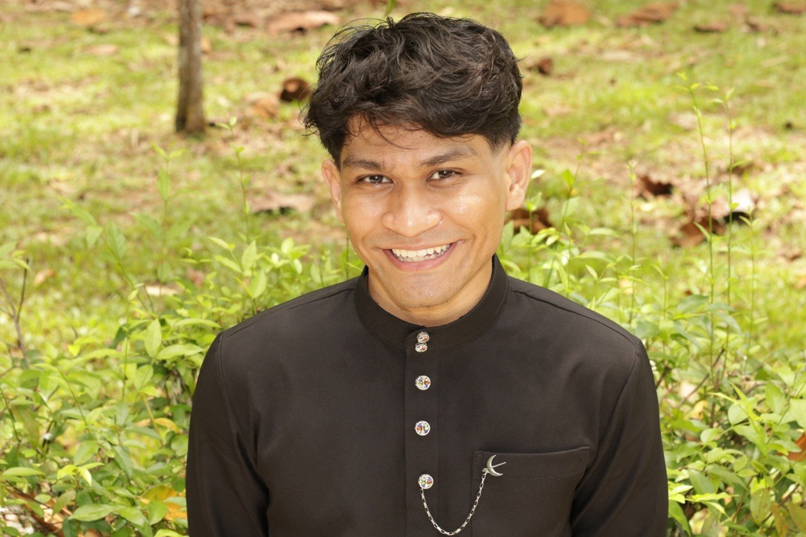
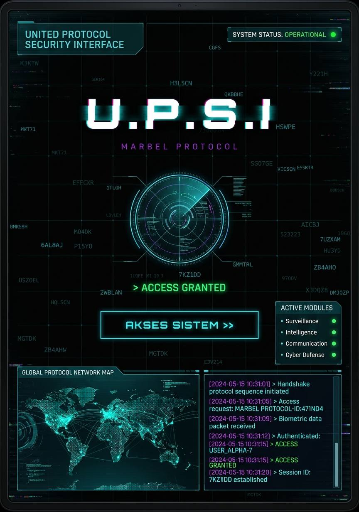
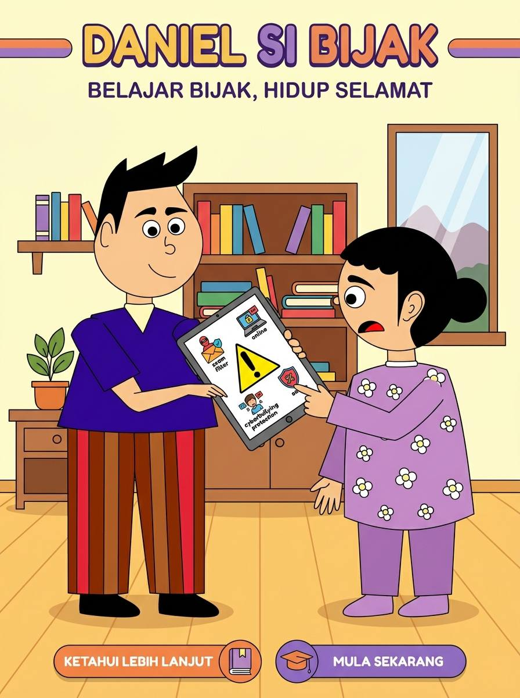
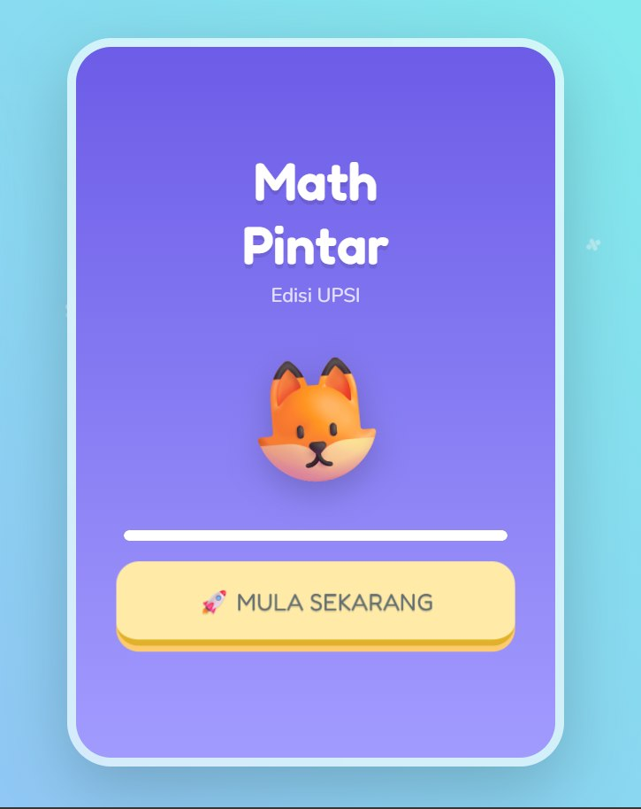

Galeri Projek Tambahan
Ruangan ini disediakan untuk memaparkan gambar-gambar projek yang lain di masa hadapan.
Halo, Saya
Saya membantu perniagaan dan individu mengubah idea menjadi penyelesaian digital yang cantik dan berfungsi dengan baik.

Muhammad Alif Daniel Bin Abd Rahman
ISMP Multimedia Specialist
Tentang Saya
Saya adalah seorang Pakar Multimedia dengan fokus mendalam pada pembangunan web dan rekaan antaramuka. Perjalanan saya bermula dari rasa ingin tahu bagaimana teknologi dapat membantu manusia menyelesaikan masalah dengan cara yang lebih elegan.
Sebagai Pakar Multimedia ISMP, saya menggabungkan aspek teknikal pengaturcaraan dengan estetika visual untuk memastikan setiap projek bukan sahaja 'berfungsi', tapi juga memberikan kesan yang tidak dapat dilupakan bagi penggunanya.
Menyelesaikan cabaran teknikal dengan logik bersih.
Memastikan ketepatan pada setiap piksel.
Tahun Pengalaman
Proyek Selesai
2023 - Sekarang
Menguruskan aset multimedia dan membangunkan penyelesaian web dalaman.
Kenali Saya Lebih Dekat
"Satu minit mengenai visi saya dalam menggabungkan teknologi dan estetika kreatif."
Ringkasan pengalaman kerja, kemahiran teknikal, dan pencapaian profesional saya dalam bidang multimedia.
Terakhir dikemas kini: April 2026
Kepakaran
Portfolio

WEB DEV / E-LEARNING
Platform pembelajaran interaktif berkonsep perisikan untuk Asas Sains Komputer.

2D ANIMATION
Video animasi 2D kempen kesedaran mengelakkan ancaman scammer.

BRANDING
Identiti visual lengkap untuk profesional dalam industri kreatif.
Saya sentiasa terbuka untuk kolaborasi atau peluang pekerjaan baru. Hantarkan mesej dan saya akan balas secepat mungkin.
d20231106554@siswa.upsi.edu.my